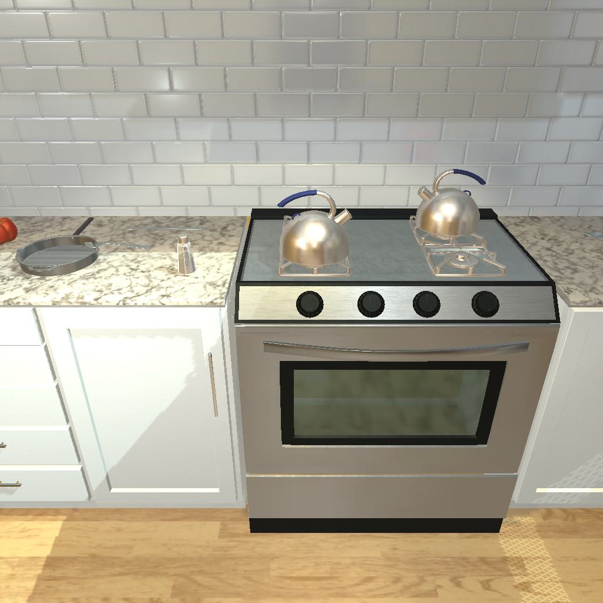

---------------------------------------------------------task: 16---------------------------------------------------------
--------------------------------------------------------------------------------------------------------------------------------------------------------------------
--------------------------------------------------------------------------------------------------------------------------------------------------------------------
Step:--------------------------------------------------------------------------3-------------------------------------------------------------------------------
----------------------------------------
VLM Prompt:
Image1:
**Instruction**
1. Analyze the provided image to identify all visible household objects, focusing on those relevant to the task description "put a cool pan in sinkbasin."
2. Use the analysis of the image and the task hint "The agent must find an object of the desired type, pick it up, go to a fridge, cool the object with the fridge, then find the correct location to place it, and put it down there. The agent does not need to use the fridge button or open the fridge to cool the object, and the agent just needs to do action that is "cool the object with the fridge"." to answer the question: what is the most reasonable action in the choices for the task description "put a cool pan in sinkbasin"?
4. Decide and write the answer using the template: The answer is: (i): , where i is the real number. If there is no desired object in the image, search every place based on **Initial Observation** to find the object. And if no one is exactly correct, choose a similar answer.
**Initial Observation**
You are in the middle of a room. Looking quickly around you, you can see cabinet (1-9), countertop (1-3), drawer (1-9), stoveburner (1-4), microwave (1), sink (1), fridge (1), toaster (1), coffeemachine (1), sinkbasin (1), shelf (1-3), garbagecan (1)
**Answer Choices**
(1): go to countertop 1
(2): go to countertop 2
(3): go to drawer 1
(4): go to drawer 2
(5): go to drawer 3
(6): go to drawer 4
(7): go to stoveburner 1
(8): go to drawer 5
(9): go to stoveburner 2
(10): go to stoveburner 3
(11): go to stoveburner 4
(12): go to cabinet 3
(13): go to cabinet 4
(14): go to microwave 1
(15): go to cabinet 5
(16): go to cabinet 6
(17): go to cabinet 7
(18): go to sink 1
(19): go to toaster 1
(20): go to coffeemachine 1
(21): go to cabinet 8
(22): go to drawer 6
(23): go to drawer 7
(24): go to drawer 8
(25): go to sinkbasin 1
(26): go to shelf 1
(27): go to shelf 2
(28): go to countertop 3
(29): go to shelf 3
(30): go to drawer 9
(31): go to cabinet 9
(32): go to garbagecan 1
(33): open cabinet 1
(34): close cabinet 1
(35): examine cabinet 1
**Answer**
Let's think step by step by following the instructions.
----------------------------------------
----------------------------------------
Original Response:
The task is to "put a cool pan in sinkbasin." From the image provided, we can see a pan on countertop 1. Since the task requires the pan to be cool and the hint specifies that the agent must cool the object with the fridge, the agent does not need to interact with the fridge buttons or open the fridge; it just needs to perform an action that represents "cool the object with the fridge." After cooling the pan, the agent will need to place it in the sinkbasin.
From the **Initial Observation**, we know where the sinkbasin is located. There is no action listed in the answer choices that directly represents cooling the pan with the fridge. However, the agent can pick up the pan from countertop 1 and then proceed to put it in the sinkbasin.
The most reasonable action from the choices provided for the task description "put a cool pan in sinkbasin" is to first go to the location of the pan. Therefore, the answer is:
The answer is: (1): go to countertop 1
----------------------------------------
----------------------------------------
>>> Refine Original VLM Response and Get Pure Action: go to countertop 1
----------------------------------------
-----------------------------------------------------------------
Running time: 11.217622995376587 seconds
Total Money: 5.143649999999998
-----------------------------------------------------------------
-----------------------------------------------------------------
Text Observation:You arrive at loc 1. On the countertop 1, you see a pan 1, a bread 1, a tomato 1, a spoon 2, a butterknife 1, a saltshaker 1, and a cup 1.
-----------------------------------------------------------------
UNSUCCEED